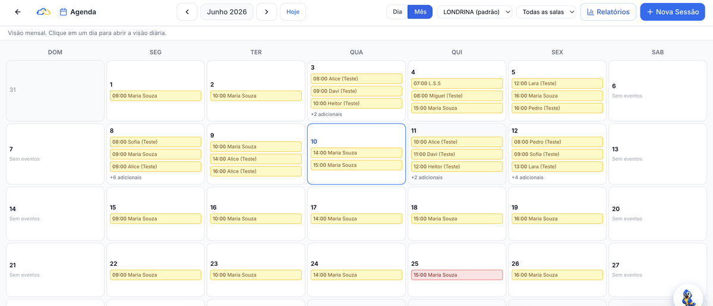
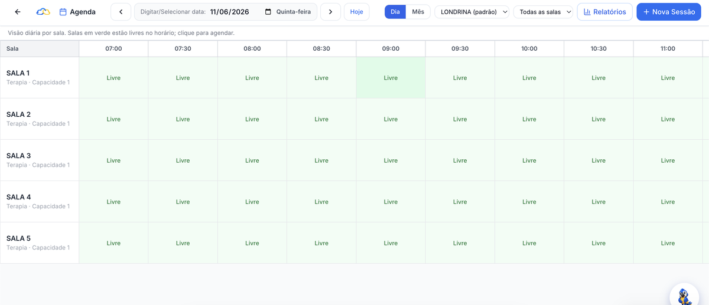

VB-MAPP
marcos do comportamento verbal
📅 Seu dia (15/06/2026) — 6 sessões
Parece que você tem um dia cheio hoje!
Apoio Inteligente
É o seu assistente dentro do sistema. Ele conhece a agenda, as sessões, os instrumentos aplicados e as metas de PEI (Plano Educacional Individualizado) dos seus pacientes. Ele responde em segundos, do jeito que você perguntaria a um colega. Só dados da sua clínica, sempre sob seu controle.
Deslize para o lado para ver as 5 conversas →
📋 Última aplicação de VB-MAPP — Cecília
Pontuação acumulada por domínio:
🎯 Metas ativas do PEI — Bento (3)
🔎 Pacientes sem sessão nos últimos 14 dias — 3 encontrados
Nenhum deles tem sessão futura agendada.
📊 Comparação ABLLS-R — Joaquim
Variação por domínio:
📅 Seu dia (15/06/2026) — 6 sessões
Parece que você tem um dia cheio hoje!
O Apoio Inteligente nunca diagnostica e nunca prescreve. Ele lê, organiza e responde, e só cria um agendamento depois que você confirma na tela. A decisão clínica é sempre sua. As conversas exibidas usam pacientes e dados fictícios, apenas para demonstração.
Antes do Apoio
A agenda numa planilha, a evolução num grupo de WhatsApp, o relatório num Drive que ninguém acha. Toda hora gasta procurando informação é uma hora roubada da criança que está na sala esperando. O Apoio junta tudo num fluxo clínico de verdade e devolve esse tempo para o atendimento.
Um cadastro, um prontuário, uma agenda. Nada se perde entre abas e grupos.
Quem é da recepção vê o que é da recepção; quem é clínico vê o que é clínico.
Multi-unidade com cada clínica isolada e organizada, sem planilha paralela.
Relatórios gerados por IA
Aplicou VB-MAPP, ABLLS-R ou Socially Savvy? O Apoio transforma a pontuação em um relatório estruturado de 8 seções, gerado por IA a partir dos dados reais da aplicação. Você edita o que quiser, seção por seção, e entrega um documento à altura do seu trabalho.
8 instrumentos integrados
Aplicação, pontuação e histórico no mesmo lugar. Sem protocolo de papel, sem planilha paralela. Cada aplicação fica registrada e comparável ao longo do tempo.
marcos do comportamento verbal
habilidades básicas de linguagem e aprendizagem
triagem do desenvolvimento
desempenho ocupacional
avaliação de habilidades motoras e autonomia
inventário de desenvolvimento
triagem precoce, respondido também pela família no portal
habilidades sociais
Da agenda ao prontuário
O Apoio organiza o dia a dia da clínica do jeito que ele realmente acontece: agenda com salas, sessão registrada na hora, PEI com critério de domínio e prontuário que conta a história completa de cada paciente.
Monte a semana uma vez, repita sem retrabalho.
Cronômetro rodando, notas na hora, nada fica para depois.
Metas com alvo, critério de domínio e progresso acompanhado sessão a sessão.
O histórico clínico organizado, sempre acessível a quem pode acessar.
Admin, profissional e recepção, cada um com sua visão; várias unidades, um sistema.


Portal da família
O responsável entra no portal e vê a agenda, acompanha o progresso e participa do processo sem precisar perguntar no corredor. Transparência que fortalece a adesão ao tratamento e a confiança na sua clínica.
Segurança e LGPD
LGPD aqui não é banner de cookie: é arquitetura. Antes de qualquer dado chegar à IA, ele é pseudonimizado. As conversas são criptografadas. Cada clínica é isolada das demais. E nada disso funciona sem o consentimento explícito da clínica.
A IA trabalha com códigos, não com identidades.
As conversas do Apoio Inteligente são cifradas.
A clínica decide se e quando ativa a IA.
Seus dados nunca cruzam com os de outra clínica.
Cada acesso registrado, com direito ao esquecimento respeitado.
Demonstração
Em uma demonstração ao vivo, mostramos o Apoio Inteligente respondendo, o relatório saindo e a agenda da sua equipe organizada, com cenários do tamanho da sua clínica. Sem compromisso, sem script decorado. Preencha e a gente entra em contato.